You can also use a FeatureReader or DatabaseQuerier to restrict your data on read, including with custom queries and/or spatial initiators.
After completing this lesson, you’ll be able to:
In this lesson, you will:
Performance methodology is weak when a workspace's design causes the workspace to use more system resources (CPU and memory) than necessary. Performance methodology means setting up a workspace to run efficiently, saving you valuable time.
A typical scenario in FME is to read data into a workspace and then filter out features (records) that are not required:
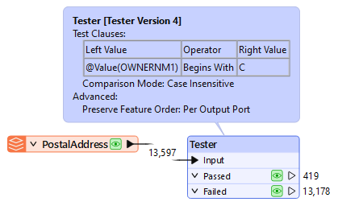
However, when data is read and immediately discarded, the resources used to read that data are a direct performance loss.
If data is filtered as it is read, rather than afterward, performance is much better, and many formats have parameters to do just that:
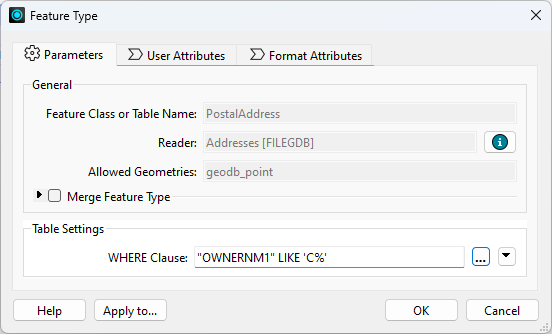
A ‘WHERE Clause’ parameter applies the required filter directly to the Geodatabase reader. Only data that matches the where clause is read and enters the workspace.
You can also use a FeatureReader or DatabaseQuerier to restrict your data on read, including with custom queries and/or spatial initiators.
The schema of a source dataset is represented on the FME canvas by feature type objects:
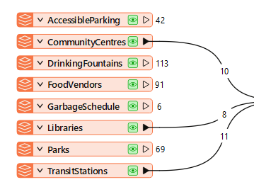
Not connecting a feature type to other objects in your workspace is equivalent to reading and discarding data and is detrimental to performance.
When adding readers, FME prompts the user to select feature types to add to the translation. You should avoid adding feature types you don't need and remove ones already added but not connected. Excess feature types slow your work, clutter the canvas, and make maintaining a clean and tidy style harder.
Every reader has a parameter (Parameters > Features to Read > Feature Types to Read) that controls which feature types are read when the workspace runs. You can quickly choose which feature types to use with this parameter. Note, however, that if you link this to a user parameter, the end user will decide. In that case, you should ensure that only the feature types are available to select. It is still good practice to find and disable or remove any feature types you don't currently need to use, but this parameter offers a shortcut that can also improve performance.
Excess Attributes and Lists
Once data has been read into a workspace, you can still reduce its size to assist performance. For example, attributes not defined in the output schema are not necessary for a workspace, so you should remove them:
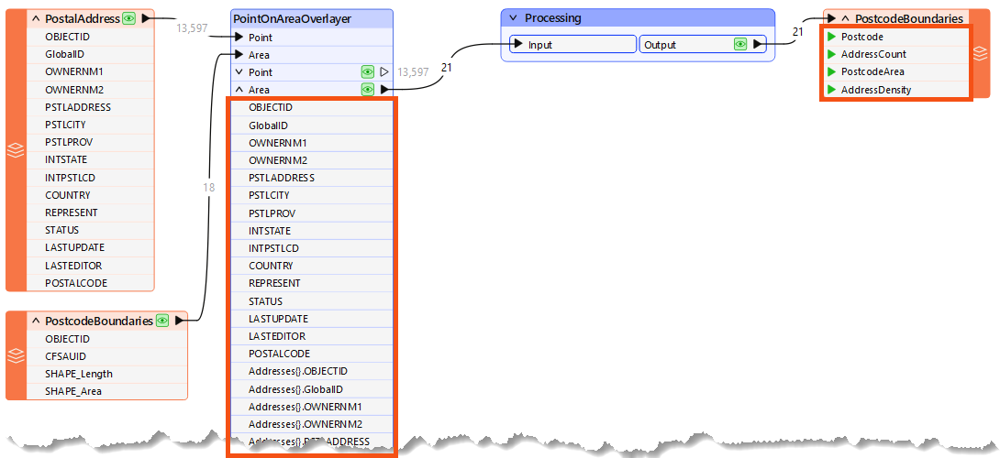
Here, a workspace author calculates the number of addresses in each city's postcode (CFSAUID). The address attributes are not required in the output schema but are copied onto the postcode features along with a list of addresses, and everything is carried through to the end of the workspace.
In this scenario, the author should avoid the PointOnAreaOverlayer options for copying attributes and creating lists:
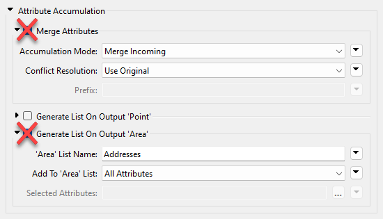
This step will reduce the memory required to run the translation without affecting its output.
Lists are the worst attribute type to keep for no reason since they can have multiple values for each record. Parameters in many join transformers allow the author to generate only the list attributes required:
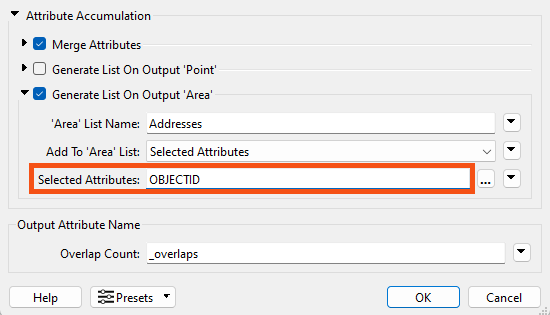
Sometimes, scaling up/performance means using more datasets of varying types and quality. If you consider data quality, you can protect future performance.
One way to design for future capabilities is by using error trapping.
Error trapping is a way to design a workspace so that unexpected data does not cause the workspace to fail. The author attempts to foresee potential data problems and build methods to handle them.
Error trapping can be as simple as adding a test or filter transformer to weed out bad features, or it can be more complex and include different ways to process data, depending on the circumstances.
Performance
You can refer to this tutorial series for additional FME performance tips.
Ask AI Assist Chat for help identifying and fixing performance issues. It knows the context of the objects on your canvas and can use it to help you identify inefficiencies.
Error Trapping
The Tester transformer has an operator for testing whether an attribute has a value. This is very useful for error trapping, as it tests whether an attribute has a value before using it as the source for a parameter.
You can use the Logger transformer to issue Information, Warning, and Error messages to the log.
You can use the Terminator transformer to issue custom error messages, which is also helpful in building more extreme error-trapping logic into your workspaces or custom transformers. If a specific condition means the workspace should fail with an error, you can use a Terminator to catch those cases.
For advanced use cases, you can use error trapping and attribute validation techniques to build a testing framework for your workspaces. You can learn more about testing frameworks from this guest post on our blog or by checking out the rTest for FME tool.

Jennifer wants to calculate the walkability of each address in Vancouver, a measure of how easy it is to reach local facilities on foot. Her workspace reads address, crime, and leisure data and writes a walkability score for each address. The workspace produces the right result, but it caches far more data than it needs, and she wants to improve its performance.
In this exercise, you will:
Running the workspace before you examine it gives you data caches to inspect as you work. The run takes a while, so start it now and read through the next step while it finishes.
The workspace is unorganized, so it is easier to work through it in sections. A colleague modified it slightly, so it does not match the diagram exactly, but it is close enough to follow how it works.
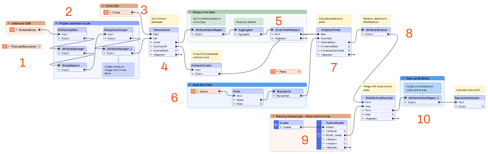
Saving the workspace as a template with its data caches gives you a baseline measurement. After you make performance improvements, you will save a second template and compare the two file sizes to see how much you gained.
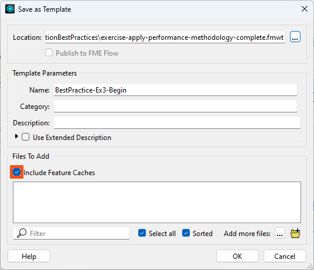
How much memory each feature needs depends partly on how many attributes and lists it carries. Because this workspace has many attributes to remove and only a few to keep, you will use an AttributeKeeper.
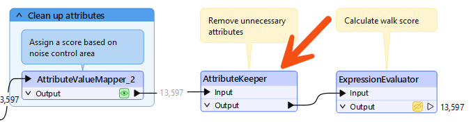
The final output of the workspace is a single score, so the component attributes used to calculate that score are not needed. Lists are the worst attribute type to keep for no reason, because they hold multiple values for every record.
CrimeList.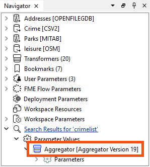
Reading data that the workspace never uses is another reason a workspace runs slowly. The original author left two feature types connected to nothing: PostcodeBoundaries from Addresses.gdb, and Parks from an earlier version that measured walking distance to parks instead of pools.
Transformers whose output you never need to inspect still generate caches. Collapsing a bookmark hides the transformers inside it, so re-running the translation creates a single cache for the whole group instead of one per transformer.
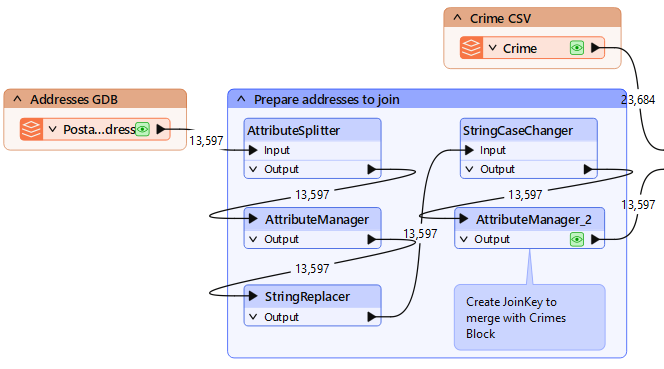
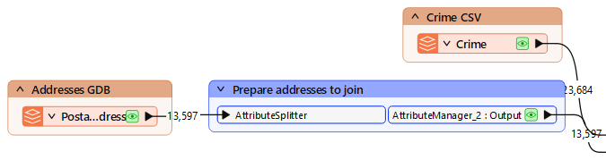
Re-running the workspace rebuilds the caches with your changes in place. The collapsed bookmark produces one cache instead of five, and the AttributeKeeper drops the attributes the output does not need.